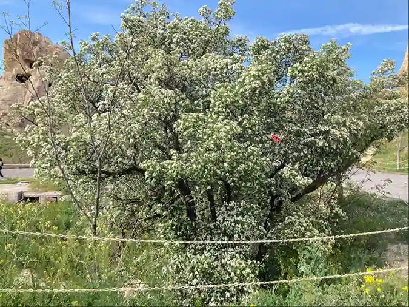

附錄
凱馬克立地下城
凱馬克立地下城，基督徒如遭外來攻擊或於伊斯蘭教時期受迫害則轉入地下的暫時性住所，地下城的內部設施可幫助我們瞭解當時的生活情景。凱馬克立地下城有8層，超過1000間房間，可以容納一萬多人。走入其中宛如迷宮。其通風設備、廚房、倉庫、酒窖、廁所、教堂、臥室、榨酒（油）池⋯⋯等等，一應俱全。

以弗所遺址
以弗所古城遺址於20世紀初陸續挖掘出土，斷垣殘壁隨處可見，只有少數定點保持原貌，西元17年一次大地震，嚴重摧毀以弗所城，羅馬人旋即展開修護恢復原貌，當基督教文明興起，這座原以信仰多神的希臘古都，就逐漸被棄置形成廢墟，甚至不少建材遭到拆解移作其他建築之用。
以弗所曾經是小亞細亞最大的一座城，人又近25萬，城中有超過20間異教廟宇，以弗所是羅馬帝國中最先進的城市之一，住在這裡的居民擁有許多奢侈的享受，例如自來水、室內廁所、噴泉、環繞著巨柱的花園，有廊柱的大理石街道，體育館和公共浴池、圖書館，還有一座可容納25,000人的圓形大劇場。
以弗所曾經是小亞細亞最大的一座城，人又近25萬，城中有超過20間異教廟宇，以弗所是羅馬帝國中最先進的城市之一，住在這裡的居民擁有許多奢侈的享受，例如自來水、室內廁所、噴泉、環繞著巨柱的花園，有廊柱的大理石街道，體育館和公共浴池、圖書館，還有一座可容納25,000人的圓形大劇場。

以弗所遺址｜刻有耶穌魚記號的石頭
石頭上這個被刻印的圖案：ΙΧΘΥΣ（ikhthýs，ἰχθύς）是公元1世紀通用希臘語 ikʰˈtʰys）。
ΙΧΘΥΣ這個符號，每一個希臘字母拼出來的意思：耶穌基督、上帝的兒子、救主。在初代教會時期被用來代表教會符號，中文稱為耶穌魚。
ΙΧΘΥΣ這個符號，每一個希臘字母拼出來的意思：耶穌基督、上帝的兒子、救主。在初代教會時期被用來代表教會符號，中文稱為耶穌魚。
以弗所遺址｜可容納25,000人的圓形大劇場
在初代教會歷史發展過程中，羅馬政府對基督徒的迫害時有時無，基督教在313年米蘭赦令之前，在法律上始終是非法宗教，所以凡信奉基督的人，都要有足夠的心理準備，可能會被送到鬥獸場中受刑，性命隨時不保，羅馬城巿有兩種劇場，一種是半圓形的劇場，主要用來上演歌劇；另一種是圓形的鬥獸場，是許多基督徒殉道之處。
以弗所遺址｜塞爾撒斯圖書館
亞底米女神廟遺址（Artemis Temple）
城中的生活和經濟中心是亞底米（Artemis），她是古代一個主管生育的女神，這座供奉亞底米女神的神廟，由127根超過20多公尺高的石柱建成，每支圓柱都是由一位國王所獻，其中有三十六支鑲金嵌花，柱子上都刻有希臘時代著名的事件，建築亞底米女神廟是當時世界七大景觀之一。
亞底米女神廟的說明圖

Cappadocia(卡帕多奇亞)｜加帕多家
Cappadocia（卡帕多奇亞），聖經名為加帕多家（使徒行傳二章9節），位於安納托利亞中部，佔地約2萬平方公里，300餘萬年前的火山爆發（Mt.Hasan 3,268m / Mt.Argaeus 3,917m），大量熔漿覆蓋了整個加帕多家地區；火山灰冷卻凝固後，形成繽紛的地表，由於灰石所含礦物質成分不同、硬度不一，經過長時期的日曬、風吹、雨淋，質地較軟的部分逐漸被侵蝕流失，只留下較為堅硬的玄武石及石灰華，於是形成一片廣闊的奇岩怪石，綿延成一座座的山谷、和造型奇特的精靈煙囪、洞穴教堂、及珍貴的壁濕畫、巨大的堡壘岩洞⋯⋯

葛雷米谷露天修道院
加帕多家在初代教會時期具有相當的影響力，教會史中的【加帕多家三教父】都曾主理此處的隱修院（初代教會加帕多家三大教父：St. Basil the Great (大巴西流)、St. Gregory of Nyssa（尼撒的貴格利）死於394AD、St. Gregory of Nazianzus（拿先斯的貴格利），加帕多家的地形經長期風化侵蝕，形成各種外型特異的岩洞，這些岩洞遍佈了整個地區，同時也被初代教父作為隱修院之用，而在第四世紀中期以後，基督徒也使用這些岩洞作為禮拜堂。岩洞內部目前仍保留一些重要的耶穌生平故事的溼壁畫。

格雷米谷露天修道院｜路上的蘋果樹
（資料來源：聖經公會彭國瑋老師提供）
（照片拍攝者：林月娥）
（照片拍攝者：林月娥）